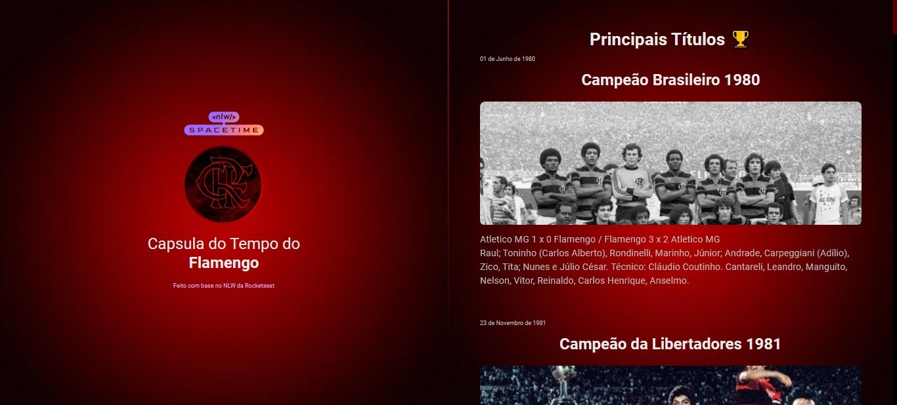

15 de Fevereiro de 2023
Cápsula do Tempo Flamengo

Projeto desenvolvido por mim baseado no Projeto de Cápsula do Tempo
com o tema Clube de Regatas do Flamengo retratando alguns títulos de
sua História.
Tecnologias Utilizadas: HTML , CSS, Javascript.
Clique na Imagem para visualizar.